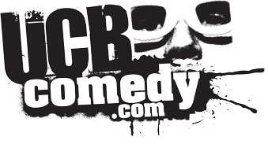
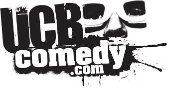
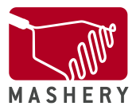
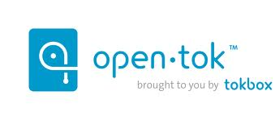

Present

Sep 8 & 9
Pivotal Labs
841 Broadway NY, NY
What Is It?
Comedy Hack Day is an overnight hackathon bringing comedians and developers together to build hilarious hacks. We believe that comedy can make technology more engaging and technology can make comedy more useful. It's the first Comedy Hack Day ever so we don't know exactly what to expect, but we do know there will be pizza.
Schedule
Friday, Sept. 75:30 — Optional Whiskey Friday @ Brass Monkey
Saturday, Sept. 8
9:00 — Breakfast & registration
10:00 — Welcome, introductions, rules & prize announcements
10:30 — Five minute technology pitches from sponsors
11:00 — One minute project pitches from participants
12:00 — Team up & start hacking
1:00 — Lunch available
6:00 — Dinner & evening check in
*Note: For any Hackathon virgins, the majority of teams will almost certainly work well into the night, either from home or at the venue (it’ll be open & available all night). So plan accordingly.
Sunday, Sept. 9
9:00 — Breakfast available
1:00 — Lunch available
2:30 — Deadline to submit your hack on HackerLeague
3:00 — Demos (No more than 3-5 minutes per)
Watch the livestream
5:00 — Awards & prizes
5:30 — Get the hell outta here!
Directions:
Take the 4, 5, 6, L, N, Q, or R to the 14 St-Union Square stop. Exit the station and walk south on Broadway - the building is halfway between 14 St and 13 St. Pivotal Labs is on the 8th floor.
Judges:
Hilary Mason is the Chief Scientist at bitly, co-founder of HackNY, creator of dataists, and member of NYCResistor.
Anil Dash is an entrepreneur, writer, and geek living in New York City, obsessed with the ways that technology shapes and transforms culture, media, government and society.
Lizz Winstead is co-creator and former head writer of The Daily Show and Air America Radio co-founder, she is one of the top political satirists in America.
Chris Gethard is a writer, actor, and comedian living in New York City. He is a member of the Upright Citizens Brigade Theater and host of The Chris Gethard Show.
Sponsors:
If you are interested in sponsoring, please e-mail organizers@comedyhackday.org for more details.
 



FAQs
Q: "Hi! I'm a comedian. What's a hackathon?"A: Please ask the internet before any further questions - http://en.wikipedia.org/wiki/Hackathon
Q: "Hi! I'm a developer (or designer) but I'm not very funny--should I attend?"
A: Yes! We're bringing in comedy folk for just that reason.
Q: "Hi! I'm a media person and I need more clicks on my site. Can I attend and write about Comedy Hack Day?"
A: Email organizers@comedyhackday.org for one free click on your site.
Q: "Hi! My question wasn't in the FAQ. What do I do?"
A: Email organizers@comedyhackday.org with your question that somehow didn't fit into our extensive FAQ section.